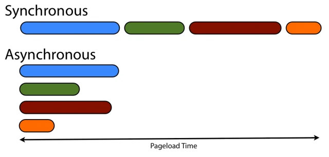
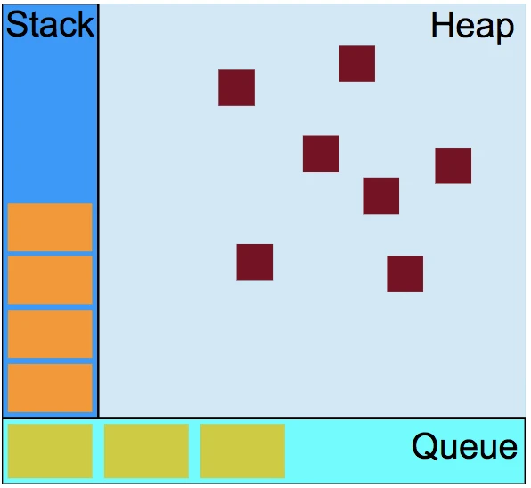
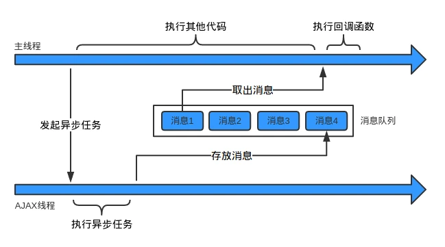

javascript同步异步、单线程、多线程、消息队列讲解
一、同步和异步

同步
同步在函数返回结果的时候，调用者能够拿到预期的结果(就是函数计算的结果)，那么这个函数就是同步的
console.log('hello')；执行后，获得了返回结果
如果函数是同步的，即使调用函数执行任务比较耗时，也会一致等待直到执行的结果，如下代码
function wait(){
var time = (new Date()).getTime();//获取当前的unix时间戳
while((new Date()).getTime() - time > 5000){}
console.log('5秒过去了');
}
wait();
console.log('慢死了');
上面的代码中，函数wait是一个耗时程序，持续5秒，在他执行的这漫长的5秒中，下面的console.log('慢死了');函数只能等待，这就是同步
异步
如果在函数返回的时候，调用者还不能得到预期的结果，而是将来通过一定的手段得到(回调函数)，这就是异步，例如ajax操作
如果函数是异步的，发出调用后了，马上返回，但是不会马上返回预期结果，调用者不必主动等待，当被调用者得到结果之后会通过调用哈部署主动通知调用者
二、单线程和多线程
了解完同步和异步之后，我们再来看看我们的问题：单线程又怎么会有异步呢？
JavaScript其实就是一门语言，说是单线程还是多线程得结合具体运行环境。众所周知，js的运行环境就是浏览器，具体由js引擎取解析和执行。下面我们来了解下浏览器。
浏览器
一个浏览器通常由以下几个常驻的线程：
渲染引擎线程，负责页面的渲染
js引擎线程，负责js的解析和执行
定时触发器线程，处理setInterval和setTimeout
事件触发线程,处理DOM事件
异步http请求线程，处理http请求
要注意的是渲染引擎和js引擎线程是不能同时进行的。渲染线程在执行任务的时候，js引擎线程会被挂起。因为若是在渲染页面的时候，js处理了DOM，浏览器就不知道该听谁的了
JS引擎
通常讲到浏览器的时候，我们会说到两个引擎：渲染引擎和JS引擎。
1、渲染引擎:Chrome/Safari/Opera用的是Webkit引擎，IE用的是Trdent引擎，FireFox用的是Gecko引擎。不同的引擎对同一个样式的实现不一致，就导致浏览器的兼容性问题。
2、JS引擎:js引擎可以说是js虚拟机，负责解析js代码的解析和执行。通常有以下步骤：
词法解析：将源代码分解位有意义的分词
语法分析：用语法分析器将分词解析成语法树
代码生成：生成机器能运行的代码
代码执行
不同浏览器的js引擎也各不相同，Chrome用的是V8，FireFox用的是SpiderMonkey,Safari用的是JavaScriptCore，IE用的是Chakra。
之所以说js是单线程就是因为浏览器运行时只开启一个js解释器，原因是若有两个线程操作DOM，浏览器就又晕了。
JavaScript是单线程的，但是浏览器不是单线程的。一些I/O操作，定时器的计时和事件监听是由其他线程完成的。
三、消息队列与事件循环

这就需要了解消息队列和事件循环了。
如上图所示，左边的栈存储的是同步任务，就是那些能立即执行、不耗时的任务，如变量和函数的初始化、事件的绑定等等那些不需要回调函数的操作都可归为这一类。
右边的堆用来存储声明的变量、对象。下面的队列就是消息队列，一旦某个异步任务有了响应就会被推入队列中。
如用户的点击事件、浏览器收到服务的响应和setTimeout中待执行的事件，每个异步任务都和回调函数相关联。
JS引擎线程用来执行栈中的同步任务，当所有同步任务执行完毕后，栈被清空，然后读取消息队列中的一个待处理任务，并把相关回调函数压入栈中，单线程开始执行新的同步任务。
JS引擎线程从消息队列中读取任务是不断循环的，每次栈被清空后，都会在消息队列中读取新的任务，如果没有新的任务，就会等待，直到有新的任务，这就叫事件循环。

上图以AJAX异步请求为例，发起异步任务后，由AJAX线程执行耗时的异步操作，而JS引擎线程继续执行堆中的其他同步任务，直到堆中的所有异步任务执行完毕。
然后，从消息队列中依次按照顺序取出消息作为一个同步任务在JS引擎线程中执行，那么AJAX的回调函数就会在某一时刻被调用执行。
四、实例
最后来一个经典的面试题来帮助大家理解js的同步和异步。
代码如下：
//执行下面这段代码，执行后，在 5s 内点击两下，过一段时间(>5s)后，再点击两下，整个过程的输出结果是什么？
setTimeout(function(){
for(var i = 0; i < 100000000; i++){}
console.log('timer a');
}, 0)
for(var j = 0; j < 5; j++){
console.log(j);
}
setTimeout(function(){
console.log('timer b');
}, 0)
function waitFiveSeconds(){
var now = (new Date()).getTime();
while(((new Date()).getTime() - now) < 5000){}
console.log('finished waiting');
}
document.addEventListener('click', function(){
console.log('click');
})
console.log('click begin');
waitFiveSeconds();
要想了解上述代码的输出结果，首先介绍下定时器。
setTimeout 的作用是在间隔一定的时间后，将回调函数插入消息队列中，等栈中的同步任务都执行完毕后，再执行。因为栈中的同步任务也会耗时， 所以间隔的时间一般会大于等于指定的时间 。
setTimeout(fn, 0) 的意思是，将回调函数fn立刻插入消息队列，等待执行，而不是立即执行。看一个例子：
setTimeout(function() {
console.log("a")
}, 0)
for(let i=0; i < 10000; i++) {}
console.log("b")
//打印结果，说明回调函数没有立即执行，而是等待同步任务执行完成后才执行的
b a
下面来解释一下面试题吧。
先执行同步任务，for循环，然后是console.log('click begin') 最后是waitFiveSeconds函数
在同步任务执行的期间，‘timera’，‘timerb’对应的回调和click事件的回调先后入队列。
同步任务结束后，js引擎线程空闲后会线查看是否有事件可执行，接着在处理其他异步任务，因此会有下面的输出：
0
1
2
3
4
click begin
finished waiting
2 click //5s中两次点击
timer a
timer b
2 click //5s后两次点击